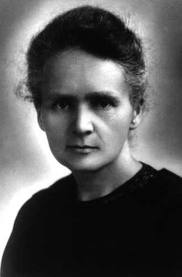

MARIE CURIE

Introduction
Marie Sklodowska Curie (1867–1934) was the first person ever to receive two Nobel prizes: the first in 1903 in physics, shared with Pierre Curie (her husband) and Henri Becquerel for the discovery of the phenomenon of radioactivity, and the second in 1911 in chemistry for the discovery of the radioactive elements polonium and radium.
About Curie
The daughter of impoverished Polish schoolteachers, Marie worked as a governess in Poland to support her older sister in Paris, whom she eventually joined there. Already entranced with chemistry, Marie took advanced scientific degrees at the Sorbonne, where she met and married Pierre, a physicist who had achieved fame for his work on the piezoelectric effect. For her thesis she chose to work in a field just opened up by Wilhelm Roentgen's discovery of X-rays and Becquerel's observation of the mysterious power of samples of uranium salts to expose photographic film. She soon convinced her husband to join in the endeavor of isolating the "radioactive" substance—a word she coined.
In the midst of her busy scientific career Marie raised two daughters—in part, with the help of her father-in-law. Her elder daughter, Irène Joliot-Curie, became a Nobel Prize–winning chemist, also with her husband, Frédéric Joliot. Mother and daughter both eventually died of leukemia induced by their long exposure to radioactive materials.
Curie's Work
In 1898, after laboriously isolating various substances by successive chemical reactions and crystallizations of the products, which they then tested for their ability to ionize air, the Curies announced the discovery of polonium, and then of radium salts weighing about 0.1 gram that had been derived from tons of uranium ore. After Pierre's death in 1906 in a streetcar accident, Marie achieved their objective of producing a pure specimen of radium.
Just before World War I, radium institutes were established for her in France and in Poland to pursue the scientific and medical uses of radioactivity. During the war Marie organized a field system of portable X-ray machines to help in treating wounded French soldiers.
References
http://www.chemheritage.org/discover/online-resources/chemistry-in-history/themes/atomic-and-nuclear-structure/curie.aspx